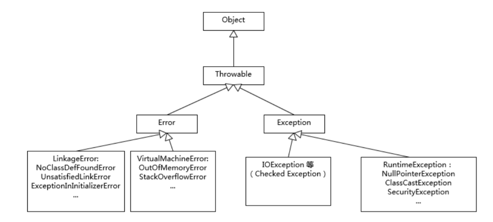

JAVA异常层次结构
JAVA中所有异常都是由Throwable继承而来，异常层次结构可从Throwable超类向下分为Exception,Error两个子类。

Exception
Exception是程序正常运行中，可以预料的意外情况，可能并且应该被捕获，进行相应的处理。该层次结构分解为两个分支IOException,RuntimeException。划分这两个层次的规则是：由程序错误导致的异常属于RuntimeException;而程序本身没有问题，但由于像I/O错误这类问题导致的异常就属于IOException。
RuntimeException的异常通常包含以下方面：
ClassCastExceptionNullPointerExceptionArrayIndexOutOfBoundsExceptionSecurityException
IOException的异常通常包含：
Checked Exception，就是必须显式地进行捕获处理，这是编译器检查的一部分。- 试图在文件的尾部读取数据
- 试图打开一个不存在的文件
- 试图根据给定的字符串查找Class对象，而这个字符串表示的类并不存在
Error
Error类层次结构描述了JAVA运行时系统内部错误和资源耗尽错误。绝大部分的Error都会导致程序（比如JVM自身）处于非正常的、不可恢复状态。常见比如：
OutOfMemoryErrorNoClassDefFoundError
异常处理
java异常处理五个关键字：try、catch、finally、throw、throws
1.抛出异常throw
throw：用来抛出一个指定的异常对象。throw用在方法中，用来抛出一个异常对象，将这个异常对象传递到调用者出，并结束当前方法的执行。
throw new 异常类名（参数）：注意：
- 1.throw关键字必须写在方法的内部
- 2.throw关键字后边new的对象必须是Exception或者Exception的子类对象
- 3.throw关键字抛出指定的异常对象，就必须处理这个异常对象
- throw关键字后边创建的是RuntimeException或者是RuntimeException子类对象，可以不处理，默认交给JVM处理（打印异常对象，中断程序）
- throw关键字后边创建的是编译异常，必须使用throws或者try…catch处理
2.声明异常throws
throws会把异常对象声明抛出给方法的调用者处理
修饰符 返回值类型 方法名（参数列表） throws AException，BException...{
throw new AException("原因1");
throw new BException("原因2");
}注意：
- 1.throws关键字必须写在方法声明处
- 2.throws关键字后边声明的异常必须是Exception或者是Exception的子类
- 3.方法内部如果抛出了多个异常对象，那么throws后边也必须声明多个异常
- 如果抛出的多个异常对象有子父类关系，直接声明父类对象
- 4.调用了一个声明抛出异常的方法，就必须处理声明的异常
- 要么继续使用throws声明抛出，交给方法的调用者处理，最终交给JVM
- 要么try…catch自己处理异常
3.try…catch
捕获异常可设置try/catch语句
/*
如果在try语句块中的代码没有抛出任何异常，那么程序将跳过catch字句
*/
try{
编写可能会出现异常的代码
}catch(异常类型 e){
处理异常
}注意：
- 1.try中可能会抛出多个异常对象，那么就可以使用多个catch来处理这些异常
- 2.如果try中产生了异常，那么就会执行catch中的异常处理语句，执行完毕后继续下面的代码；如果try中没有产生异常，那么就不会执行catch中处理异常的语句，继续执行try…catch之后的代码
如何获取异常信息：
Throwable类中定义了一些查看方法:
public String getMessage():获取异常的描述信息,原因(提示给用户的时候,就提示错误原因。
public String toString():获取异常的类型和异常描述信息(不用)。public void printStackTrace():打印异常的跟踪栈信息并输出到控制台。
4.finally
finally：有一些代码无论异常是否发生，都需要执行。
try{
执行代码
}catch(E e){
处理异常
}finally{
无论程序怎样，最终执行代码
}
- 主要在finally中处理return语句
- 慎用return，break，continue
- 对于引用类型返回，要特别小心。如果在finally中改变了引用对象的成员属性，即使不显式地调用return语句，修改也会作用到返回值上
5.多异常处理
- 多个异常分别处理
- 多个异常一次捕获，多次处理
- 多个异常一次捕获一次处理
/*
最常用的是一次捕获多次处理方式
*/
try{
编写可能会出现异常的代码
}catch(异常类型A e){ 当try中出现A类型异常,就用该catch来捕获.
处理异常的代码
//记录日志/打印异常信息/继续抛出异常
}catch(异常类型B e){ 当try中出现B类型异常,就用该catch来捕获.
处理异常的代码
//记录日志/打印异常信息/继续抛出异常
}注意：
- 运行时异常被抛出可以不处理，不捕获也不抛出
- 如果父类抛出了多个异常,子类重写父类方法时,抛出和父类相同的异常或者是父类异常的子类或者不抛出异常
- 父类方法没有抛出异常，子类重写父类该方法时也不可抛出异常。此时子类产生该异常，只能捕获处理，不能声明抛出
6.自定义异常类
对于JAVA提供的异常类，不够使用，需要自己定义一些异常类
格式：
public class XXXException extends Exception/RuntiimeException{
添加一个空参数构造器
添加一个带异常信息的构造器
}注意：
- 自定义异常类一般都是Exception结尾，说明该类是一个异常类
- 自定义异常类，必须继承Exception或者RuntimeException
- 继承Exception：那么自定义异常类就是一个编译期异常，如果方法内部抛出了编译期异常，就必须处理异常，throws或者try…catch
- 继承RuntimeException：那么自定义异常类就是一个运行期异常，无需处理，交给JVM处理
异常机制的使用技巧
- 异常处理不能代替简单的测试
- 不要过分地细化异常
- 尽量不要捕获类似Exception这样的通用异常，而是捕获特定异常
- 不要生吞（swallow）异常
- 利用异常层次结构
- 不要只抛出RuntimeException异常。应该寻找更加合适的子类或创建自己的异常类
- 不要只捕获Thowable异常，否则会使程序代码更难维护
- 早抛出，晚捕获
性能角度分析
- try…catch代码段会产生额外的性能开销，往往会影响JVM对代码的优化，所以建议只捕获有必要的代码段
- 利用异常控制代码流程，效果也不是很好，通常比条件语句更加低效
NoClassDefFoundError，ClassNotFoundException辨析
ClassNotFoundException产生的原因：
JAVA支持使用Class.forName方法动态加载类，任意一个类的类名如果被作为参数传递给这个方法都将导致该类被加载到JVM内存中，如果这个类在类路径中没有被找到，那么此时就会在运行时抛出ClassNotFoundException异常。
NoClassDefFoundError产生的原因：
如果JVM或者ClassLoader实例尝试加载（可以通过正常的方法调用，也可能是使用new来创建新的对象）类的时候却找不到类的定义。要查找的类在编译的时候是存在的，运行的时候却找不到。
参考
《JAVA核心技术》